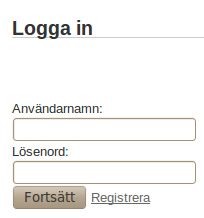
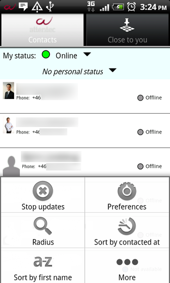

User Manual Attentec Communication Platform
Attentecs Communication Platform aspires to offer a mobile environment to communicate in. It is best suited for consultants at a company which aspires to constantly have their consultants in the field.
The platform has the following focus:
- Use geographic information to enable efficient collaboration between users
- Synchronize contact information which later easily can be distributed to people of interest
The Communication Platform is divided into two parts, one web interface where users kan update their information and one application for Android phones, which synchronizes with the server, and presents the information. The system is described below.
System Requirements
To use the system the following is required:
- Web browser
- Android phone with Android version 2.1 or newer
Quick start
Here we give a quick introduction for those who want to get started right away. If you get stuck at any point more information is given further down in the document.
- Log in to the web interface at this link.
- Press on Show at your own name and press "Generate phone key".
-
Download the application to the phone from this link.
- Install the application
- Start the application and log in with your username and phone key (created in list item two).
Server
The server is a central unit for storage and provides an interface for accessing the stored information.
Create Account
Logging in to the account can be done at this link. A new user can be registered by an admin.

Figure 1. Fields for logging in.
When registering a new user, the admin will get the page shown in Figure 2.

Figure 2. Fields for creating a new user.
Some of the information that the user (or admin) chooses to supply will be used when generating the a vCard (see further down) och business cards for the web (see further down).
Log in
Logging in is done on the page in Figure 1. Note that this password differs from the one used to log in with the phone.
Show contacts
Below in Figure 3, a list of all users in the contact database is shown.

Figure 3. Contacts registered in the contact database.
The list contains concise information about all users and by clicking the plus sign to the left on each row one can choose to expand the information for each user to get access to more detailed information.
If one chooses to click on the link "Show" at other users, information similar to that of figure 4 is shown.

Figure 4. Information about chosen user.
If one clicks on the link "Show" on their own row, even more detailed information is shown. The information that is new here is the phone key. How this key is used is explained further down.

Figure 5. Information about yourself.
Edit information
When editing information everything except coordinates and phone key can be changed. The coordinates are updated when the telephone synchronizes with the server. To see how the phone key is created, look further down. It is also possible to choose if it should be possible to access a virtual business card with name and phone number. The business card is linked from the page in Figur 5, and is accessible without logging in.

Figure 6. Fields for editing a users information.
phone key
To log in with the application a phone key is needed, which can be created quickly and easily, and can be deactivated with links on the detailed view page for each person, as displayed in Figure 7. When clicking on "Generate new phone key" a new (random) key is generated for the user. It is also possible to remove the possibility to log in completely by clicking "Remove phone key".
To make it easier to log in with the phone key it is also available as a QR-code which can be scanned by the phone with the program "Barcode Scanner" if it is installed. Barcode Scanner is free of charge and is available for download on Android Market (follow this link from the phone: market://details?id=com.google.zxing.client.android or search for "barcode scanner" on Android Market.

Figure 7. Interface for generating and reading phone key.
Business Card
It is possible to direct user to a business card in the form of a webpage that has more detailed information as well as a link to a vCard format of the same information. The QR-code that can be seen in Figure 8 can be scanned with the program Barcode Scanner, or similar applications on other platforms. The idea is that it can be read both from the webpage and from a printed business card.

Figure 8. Key for scanning business cards and link to business cards both for web and download.
Client
The application for the Android platform uses the contact database that is available at the server. Roughly it is divided into two parts, one contact list and one map function where the user can see where the other users are.
Installation
The installation of the application is performed in five steps:
- Configure the pohone to allow applications which are not from Android market according to the following steps:
- Go to "Settings"
- Go to "Applications"
- Check "Unknown sources"
- If you want to report your position (recommended) the GPS-sensor can be activated as follows:
- Go to "Settings"
- Go to "Location"
- Check "Use GPS-satellites"
- Download the application with your phone from this link. If the application "Barcode Scanner" is installed it can be used to scan this QR-code:
- When it is downloaded, click on it in the list.
- Press install and then Open.
Log in
Figure 9. Login-screen for the Android application.
In figure 9 the login-screen for the Android-application is shown. A phone key is needed to login here. This can be generated through the web interface, see above. What may be new here is the button saying "Scan key". To scan this key the application "Barcode Scanner" has to be installed. With the help of this application the QR-code from the web interface can be scanned. This code is shown when information about the logged in user is shown in the web interface.
Contact List
In figure 10 the contact list in the Android-application is shown. It is updated according to the interval set in the configurations (see further down). Aside from name and telephone number, it also shows what the user is doing at the moment, if the user has supplied such information, and also the users availability. The users availability is also shown with a colored circle. If a contact has logged out or not contacted the server for three hours the user is shown as offline.
Figure 10. Contact list in the Android-application.
Update custom status
To keep the other users updated a status can be set to what the user is doing for the moment. The update is perfomed by clicking the text field under "My Status". This status-update reaches the other users when their application updates the contact list. How often this occurs depends on what configuration they have. For the status to remain set, the programs background service has to be kept running, see below for information about how to keep it running when the application is turned off.
Figure 11. Fields for updating custom status. This is shown in the contact list for the other users of the application.
Update status
With the menu in figure 12 one can set the status one has for the moment. The menu is shown when pressing on the circle to the right of "My Status". This availability is indicated both with a circle and a line of text. Both are shown for other users in the contact list. The colored circle is also shown on the map. For the status to remain set, the programs background service has to be kept running, see below for information about how to keep it running when the application is turned off.
Figure 12. Fields for updating status. This is shown in the contact list for the other users.
Quick Contact
A window for easily contacting the other users. The contact options shown depend on how much information the contact has chosen to supply.
Figure 13. Different ways to contact the chosen contact.
Show Detailed Info
A window for displaying detailed info. This window is accesed from the window for quick contacts which is illustrated in figure 13. If telephone number, e-mail and linkedin respectively is supplied it will be shown as links which are clickable to allow for suitable interaction.
Sort contacts
Since it sometimes is of interest to sort the contacts in different ways depending on the situation, there is a menu for the contact list which offers four ways of sorting the contact (see Figure 14):
- First name
- Last name
- Distance
- Contacted at
If physical interaction with other users is desired, sorting by distance may be useful.

Figure 14. Different ways of sorting the contacts.
Contacts within a certain radius
To gain access to those who only are within a certain radius, Radius can be selected in the menu. This starts an activity which has a slider for setting the desired radius. The contact list below will then only show those who are in the given radius. Each contact can be checked and unchecked, to later contact all checked with sms or email.
Figur 15. Contacts within radius.
Close to you
This is the other large function in the Android-application. It uses the Google API for Google maps and displays bubbles where the other users currently are. If a user has not been logged in for a while the coordinate is deemed to be outdated and is no longer shown on the map. Because of this the view of where the other users are is always updated. In each bubble a picture, the users name and a circle indicating status is displayed. For information about what status each color is representing see figure 12.
Figure 16. Close To You.
Quick Contact
In the same way as in the contact list one can easily contact a user on the map by clicking on its bubble. This view is shown in Figure 17.
Figure 17. Different ways of contacting a user.
Shutting down background service
For others to see you as online, or which status you have set, the applications background service has to be running in the background. This is accomplished by "closing" the program with the "Home"-button, which has a little house as a symbol. If one wishes to completely close the program (and be shown as offline to others), one closes the program by using the "Back"-button, which has a small arrow as a symbol.
Preferences
The Android-application can be configured by each user. The things that can be varied are how often and if some things are updated. This is mainly suitable for saving battery and costs since data traffic can be more expensive when abroad. Turning off the sending of location can be desirable when one does not want to show where one is. Per default, the phone location is sent to the server only between the working hours of 8 to 17. These times can also be changed in the application.
Updates
Figure 18. Configuration of how often different updates should occur and whether location should be sent or not.
For the application to have access to new information it updates in defined intervals. These intervals can be varied by going to Preferences through the menu. The menu is accesed by clicking the button Menu on the phone. In figure 18 above the intervals that can be varied are shown. It also says wether location is updated or not. The options available are:
- Interval for fetching contacts: How often the whole list with contacts is retrieved from the server.
- Interval for updating position and status: How often others positions and statuses are retrieved from server.
- Interval for updating own location: How often the own location is retrieved from GPS and sent to server.
- Send location after: After what time of day the own location will be sent to server.
- Send location until: Until what time of day the own location will be sent to server.
- Sending location: If the own location is sent to server and thereby other users. If this is not checked GPS will not be used.
- Timeout for GPS-fix: How long the phone activates the GPS-sensor for each location retrieval. This setting has priority over accuracy below.
- Accuracy requirement for GPS: The number of meters the phone needs in accuracy before shutting down the GPS.
- URL to server: Only to be changed when the address to the server is changed. Normally not needed.
Background services
Figur 19. List of background services which are running on the phone.
To handle synchronization and updates for the application a background service is used. This can be turned of seperately from the application by using the menu-button to completely shut down all the contact with the server.
This can be desirable when travelling abroad where roaming fees might be substantial. Out of a battery point of view it is also preferable to have as little running as possible. A first action for increasing battery can be changing the applications configurations according to the paragraph above. The idea is that this service always should be turned on during working hours. It is therefore recommended to not turn it off.
If one on the other hand wants to have the background service running, but not the application (for example to show location and status to others), one can simply hide the application by pressing the "Home"-button.
Synchronization with the phone contact list
Figur 20. Synchronization with the phone contact list.
There is functionality for loading and updating the contacts from the application to the phone contact list, for ease of access even from the normal phone view. This contact synchronization works by adding the application as a synchronization-account in Androids list of contact sources. This works similarly to adding a Gmail account or other accounts.
To activate this synchronization follow these steps:
- Go to Settings -> Accounts & synch.
- Choose Add account, and then Attentec
- When the account is added it can be pressed to activate or deactivate synchronization of contacts. A forced synchronization can also be performed.
- To show or hide the synchronized contacts from the phone contact list, Attentec can be unchecked in the application Contacts -> Menu -> Show.
Permissions and what the application uses them for
To do certain things the application needs permissions which the user has to approve at installation. Below follows a list of all permissions the application requires, why they are needed and for what:
Your Position
Position which will be sent to server and to other users of the application. If and when this is done is set in the configuration according to the section Updates.
Your personal information, your accounts, and system tools
These are needed if one wishes to synchronize the contact list in the application with the telephones contact list according to above. If this is not configured they will not be used at all.
Network Communication
Used for synchronizing position and contact data with the server. How often it synchronizes different things can be set in configurations.
Call telephone number directly
This is used when choosing "Call" in the application.